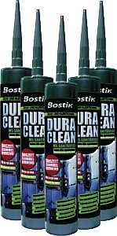

Санитарный герметик для ванн

Однокомпонентный гибридный санитарный герметик с фунгицидными и антибактериальными добавками Bostik DuraClean MS (Дюраклин).
BOSTIK DuraClean MS используется для герметизации швов и сопряжений в ванных комнатах, душевых кабинах, банях, саунах, хамамах, парных. Имеет крайне высокую адгезию к таким материалам, как керамика, кафель, мрамор, металл, акрил, штукатурка, дерево, природный камень. Не темнеет и препятствует образованию плесени или грибка в условиях высоких температур и влажности. Дюраклин - пожалуй, наилучший сантехнический герметик из существующих на сегодняшний день.
видеоролик о санитарном герметике Дюраклин (на немецком языке)Преимущества санитарного герметика для ванн Bostik DuraClean MS:
- не содержит растворителей, не имеет запаха
- не образует воздушных пузырей
- имеет очень низкую усадку
- надолго предотвращает появление плесени и грибка
- имеет очень хорошую долговечную адгезию к большинству материалов
- не содержит силикона и изоцианата
- обладает отличной устойчивостью к УФ-излучению
- может наноситься как на сухую, так и на влажную поверхность
- устойчив к атмосферному и химическому воздействию
- используется на природном камне (включая мрамор) и керамике
- разрешен к применению в установках кондиционирования и вентиляции
Герметик подходит для внутренних и наружных работ, для герметизации швов и сопряжений в плавательных бассейнах (например, прилегающие к чаше бассейна дорожки, соседние процедурные помещения).
Наиболее сложные условия эксплуатации для любых строительных материалов, в том числе и для герметиков, при бытовом использовании создаются в ванных комнатах, душевых кабинах и на кухнях. Для таких условий создан специальный санитарный герметик Bostik DuraClean MS.
Высокая влажность, резкие перепады температур, механические нагрузки — все это диктует повышенные требования к материалам. Когда встает задача герметизации швов и сопоряжений в ванных и душевых, безусловно, следует предпочесть специализированный санитарный герметик. Потому что герметик низкого качества в таких условиях в течение быстрого времени потеряет внешний вид, потемнеет, начнет пропускать влагу, а то и вовсе отстанет от поверхности.
Если учесть, что стоимость работ, как правило, значительно превышает стоимость материалов, выбор некачественного материала может привести к большим затратам.
Санитарный герметик для ванн Bostik DuraClean MS с успехом применяется в ванных, душевых кабинах. Этот санитарный герметик можно также использовать в парных, спа-салонах, саунах, бассейнах, банях и хамамах (турецкие бани). Благодаря антигрибковым добавкам и устойчивости к влажности и высоким температурам этот герметик для ванн может использоваться также на кухне вблизи источников тепла и влаги.
Герметик для ванны Бостик Дюраклин основан на ms-полимерах, что в выгодную сторону отличает его от любых герметиков на основе силиконов, полиуретанов или акрила. Бостик Дюраклин обладает высочайшей долговечной адгезией, свойственной ms-полимерам и содержит специальные фунгицидные добавки, благодаря которой он полностью предотвращает появление плесени или грибка.
Антисептический герметик Bostik DuraClean MS не изменяет цвет или других своих потребительских свойств со временем.
Нанесение герметика
Равномерно выдавить санитарный герметик для ванн DuraClean MS в имеющийся шов или стык. При заполнении швов не оставлять воздушных пузырей. Вскрытую емкость следует как можно скорее израсходовать. Поверхность подровнять при помощи слегка увлажненного мастерка, расшивки и т.п. После этого удалить клейкую ленту.
Герметик для ванн Bostik DuraClean MS наносится в большинстве случаев без грунтовки. Например, оцинкованная листовая сталь, стекло, непластифицированный поливинилхлорид, полистирол, макролон, дерево не нуждаются в грунтовке или праймере. В случае с пористыми материалами, такими, как газобетон, рекомендуется использовать специальную грунтовrу Bostik 5070.
Цвет герметика и упаковка
Герметик для ванн Bostik DuraClean MS может иметь белый, серый, серебристый, цвета.
Герметик Bostik DuraClean MS идет в упаковке картридж (туба) по 290мл.